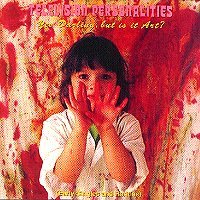

Television Personalities |
 1995 - Fire - FLIPCD 001 - CD 14th Floor Oxford St, W1 Part Time Punks Where's Bill Grundy Now? Happy Families Posing At The Roundhouse Smashing Time King And Country I Know Where Syd Barret Lives (Original) Arthur The Gardener The Prettiest Girl In The World That's What Love Is Three Wishes And Don't The Kids Just Love It? A Sense Of Belonging How I Learned To Love The...Bomb A Girl Called Charity She's Only The Grocer's Daughter Now You're Just Being Ridiculous God Snaps His Fingers The Dream Inspires Favourite Films Me And My Desire Miracles Take Longer
Thanks to Jowe Head and Ewan Mathieson for assistance with this
compilation. Despite an intermittent recording career, the Television Personalities' cult stature has grown consistently since they stumbled out of the indie punk explosion, over a decade and a half ago, with charming classics like "Part Time Punks" and "Smashing Time". For some, they have remained quintessential Punk band, whilst for others they have become the foremost exponents of post-sixties pop psychedelia and an indelible influence on many of the early Creation label and "C-86" bands. As Creation boss Alan McGee explains, "The three most influential people on me starting the label were Dan Treacy, Ed Ball and Joe Foster. Dan Tracy 'cos he's a great songwriter and also because I was really intrigued about how he did Whaam!; he made it possible foe someone like me to put out records. Ed Ball because of the early Times records and, f...in' hell, you meet him and he's so real and enthusiastic. And Joe Foster because he's literally got the best taste in music of anyone I know, bar Bobby Gillespie". Quite remarkably, these three most influential people were all original Television Personalities. An abiding memory from those days, is that of Dan constantly complaining to me and only half-jokingly, that Alan followed him everywhere like a blood-hound. No wonder then, that by the mid-80's, loads the bands spoke of the Television Personalities in tones of either hushed reverence or unrestrained enthusiasm. It's a legacy that has continued right up to the present day, their records and songs cited as favourites and influences by everyone from aspiring hopefuls to pop star like St. Etienne and illustrious stars like Evan Dando and Kurt Cobain. At the end of the 1991, when shortly to be huge Nirvana were due to play the London Astoria, I received a call from their agent to say that Kurt Cobain wanted the Television Personalities to support them and that there was £300 in it for them - enough I figured to ensure that the notoriously unreliable Television Personalities would turn out. That they did, but how they did, was another matter. I was on holiday that eventful night, but I still hear new accounts of how the Television Personalities, in a bout of musical terrorism, mercilessly baited and generally tormented and abused a headliner's audience, in scenes which bizarrely echoed them doing the same to an audience of Pink Floyd fans, a decade or so earlier. As Edward Ball acknowledged in his sleeve notes on the re-issue of Mummy Your Not Watching Me, "Every generation throws up one or two major talents and by common consensus, Dan Treacy is the most gifted songwriter working in pop today". [Clive Solomon - Fire Records]
By the time I discovered the Television Personalities in the mid-eighties all their celebrated early singles had disappeared, and when I did eventually find them they'd be proudly pinned up on the wall in some dingy basement collector's shop. "Is that 40p?", I'd ask foolishly. A reply of "Naah, forty quid, mate" was followed by knowing smiles, as I hastily left with such embarrassments. Fire Records has already reissued the band's first four albums, in their original packaging. And now, for the first time, you lucky people era treated to all the Television Personalities elusive singles - B-sides, warts 'n' all. But where to start? Well children, let's begin at the beginning. Dan was born just off the Chelsea's Kings Road, the London haunt that became all the rage in the swinging sixties. He was too young to pick up on the sounds which would later inspire him - The Who, Syd Barrett's Pink Floyd, The Beatles, The Stones and The Kinks. No, Dan was a child of the glam generation, and used to rush home to see Wizard and The Sweet on TV. Like many teenagers, he thought "I can do that", found a guitar and just as crucially, a school friend who could teach him the essential three chord rudiments. That friend was Edward Ball, who introduced Dan to Joe Foster and John and Gerrard Bennett who had a drum kit and some amplifiers in their parents basement, where the five of them would get together at weekends. Then two things happened: Dan left school and punk rock happened. It was 1976. Suddenly, bands who had scarcely stepped put of the bedroom were making records - not so much seizing the means of production, but realising it was put there at an affordable price. One band which attracted the young Ed and Dan was The Desperate Bicycles, was pioneering DIY spirit led to a series of self-financed independent discs in cheap, photocopied wraparound sleeves. Dan and Ed wrote to them to find out more, and were sent a leaflet detailing how to get a record pressed at the relatively modest cost of £400. By now it was the summer of '77 and the Pistols' "God Save The Queen" was top of the charts - well nearly. Dan, Ed and the Bennetts went to ICP Studios in Hammersmith (because The Who had recorded there) and got two finished songs for their £17, both taped live on take - "14th Floor" and "Oxford St., W1", the first two tracks heard here. "14th Floor" captures Dan at his amateurish, but endears with a tongue-in-cheek irony and musical simplicity which has since characterised many Television Personalities songs. Afterwards Dan only had enough money left to get a handful of test pressing, but he decided to send a copy to John Peel, who promptly enthused over the disc. And it was while knocking up a handmade sleeve that Dan came up with a group name. "The band was supposed to be called Teen 78 and as I wrote the titles on the white labels, I decided to put up the line-up of the band as Hughie Green, Bruce Forsyth and Bob Monkhouse, just for a joke. And the name Television Personalities came to me just as I was about to post the record", he later recalled. With Peel's on air support, Dan saved up enough to release the single properly. The Bennetts soon went their own way, recording an obscure one-off single as Recta. Ed also did his own thing, issuing a single as the 0 level ("East Sheen / Pseudo Punk" on Psycho), before he and Dan started their own label and fanzine, King's Road, in the summer of 1978. The resulting Part Time Punks EP was a masterpiece of comic pastiche. No other band could dream of singing a line like" They pay 5 pence on the buses, and they never use toothpaste, but they got two-fifty to go and see The Clash - tonight!" The title track (and "Posing At The Roadhouse") cruelly ridiculed the punk scene's decline into shallow fashion accessories and clichéd images, but perfectly chronicled the times. It proved so popular that the EP was eventually reissued on pioneering new independent label Rough Trade, run by Geoff Travis. The EP established the Television Personalities cult indie favourites. Meanwhile, a second 0 Level disc, The Malcom EP, came out on Kings Road, before Dan and Joe Foster helped Ed out on his next single with the Teenage Filmstars, "There's A Cloud Over Liverpool." Issued in July 1980, the band's charming third single "Smashing Time", revealed Dan's love of those very English movies of the past. On the single's better flip-side "King And Country", Dan reinvented McGuinn's solo from the Byrds "Eight Miles High", revealing a fascination with sixties pop witch was to lead to some of the greatest music created anywhere in the world over the next few years. That same month the band recorded their one and only session for John Peel, following a last minute cancellation by Skids. The three-piece aired four song which later appeared on their debut LP: "A Picture Of Dorian Grey", "Silly Girl", "Look Back In Anger" and "La Grande Illusion". Creation Records boss Alan McGee was later to describe "Silly Girl" as one of the best love songs ever. At this point, the band featured Foster on bass and his flatmate Mark "Empire" Sheppard on drums. Meanwhile, Joe created the Missing Scientists, for a sub-reggae cover of Dandy Livingstone's "Big City Bright Lights". Issued on Rough Trade in September, the single also featured Sheppard and Mute Records boss Daniel Miller. Treacy decided he wanted to play live gigs, but the band's first attempt at the Central School Of Art in Holborn was a disaster. Dan's drink was spiked with acid, and friends from the Swell Maps had to jump up to finish the performance, as Dan was forced to retire. More successful was a date at the Clarendon, Hammersmith, where the Television Personalities supported This Heat and Essential Logic, aided by a film and lighting show organised by Joe's college friend Paul Wright. Further gigs in and around London were followed by an eventful tour of Europe, culminating in an enforced stay in Berlin as a result of a train strike. The Television Personalities ended up playing two-set, three-hour shows - the kind of gruelling experience that the Beatles had endured in Hamburg - and looked set to miss a booking at London's Rock Garden. Faced with this dilemma, Dan phoned Ed Ball, whose Teenage Filmstars played the gig as the Television Personalities, with scarcely any recognition of this deception from the audience. Joe's college finals were approaching and left after the band's return to England. Ed Ball quickly learnt his bass parts, before the Television Personalities spent a mere three days recording their debut LP, And Don't The Kids Just Love It. Issued at the start of the 1981, the album was an absolute pop classic, packed with excellent sixties-influenced garage pop songs. The LP is probably the definitive Television Personalities pop sleeve, and the back cover was lake a scrapbook collage, featuring sixties pop-art/mod acts The Who and The Creation. There was also a photo of the mysterious ex-Pink Floyd singer, who was the subject of the band's next single, "I Know Where Syd Barrett Lives" - Dan would later cause a furore by reading the lyrics on stage at the Hammersmith Odeon, when the band supported Pink Floyd. But as Steve Sutherland, (now Editor of the NME), noted, "On this first album, Dan Treacy sang one of the most moving songs I've ever heard. But the media and public alike chose to overlook the sweet, almost suicidal sadness of "Diary Of A Young Man" for the obvious and attractively twee "I Know Where Lives Syd Barrett" and the kitsch John Steed / Emma Peel cover." Dan and Ed soon decided to leave Rough Trade and set up their own label instead, with a suitably pop-art sounding name. Whaam!'s first releases came from Ed's new band, the Times, with their debut single, "Red With Purple Flashes", and a single by the Gifted Children, a name which Dan invented for the decidedly poppy "Painting By Numbers" - although both tracks would appear on the Television Personalities' next LP. The idea of a pseudonym was nothing new: Joe recalls that prior to their first album, the band were at one point scheduled to sign to Charisma's Pre label under a different name. "Painting By Numbers" featured Joe's flatmate Bernard Cooper on bass, but he soon went back up north. With a tour already booked, Ed had to step in on bass during February and May 1981, and later for some successful dates in Holland in August, but his commitments lay elsewhere with The Times. For two gigs in Berlin with Nico, Joe Foster returned on 12-string guitar but the band played without a bassist. In the autumn, both Dan and Ed had a wail of a time down at Piccadilly's Groovy Cellar club, a new psychedelic haunt run by Clive Solomon, manager of the scene's brightest hopefuls Mood Six. Solomon signed Dan to his new publishing company, Twist And Shout Music and went on to found Fire Records - who would eventually sign the Television Personalities in 1989. In between live "action painting" at the Groovy Cellar, Treacy finished off the Television Personalities' second album, calling on both Ed (in return for playing with The Times live and on their Pop Goes Art LP) and Bernie Cooper. Where their debut album had been a classic pop-art record, Mummy Your Not Watching Me was a brilliantly surreal and personal psychedelic trip, with superbly evocative titles like "David Hockney's Diary" and "If I Could Write Poetry". As Steve Sutherland described, "Dan Treacy went mad in a way that I find as harrowing and exhilarating as any pop music I've ever experienced". Once again, the sleeve was adorned with sixties imagery, this time of the Who, a parka-clad mod poet Joe Orton, Emma Peel, Lady Penelope and the Stones' Brian Jones. The next two tracks on this compilation, the melodic "Prettiest Girl In The World" and "That's What Love Is", were recorded around this time but weren't issued until 1987 (on the German Constrictor Label). Instead, the dreamy "Three Wishes" was the Television Personalities' next single in June '82, coupled with "Geoffrey Ingram" and, taking its title from the first LP, "And Don't The Kids Just Love It". Two months later, there was a third album, but the concept didn't look too promising on paper. They Could Have Bigger Than The Beatles was nowhere near perfect, but its scope was incredible, made up of over 50 minutes of demos, out-takes and oddities, straddling both previous albums and signing off with a song of naked beauty called "mysterious Ways". It was treated as a retrospective LP, as if the Television Personalities had broken up. The band even billed a gig at the London Musicians' Collective (promoted by Alan McGee) as their last ever, and pretended to film the show for TV. The resulting misty-eyed obituaries were the ultimate irony for a band whose own nostalgic tales had until this point been ignored by the press. Instead a calling it a day, a new Television Personalities line-up was created: Joe Foster back on 12-string, his college mate Dave Musker on a organ, drummer Jeffrey Bloom, and Mark Flunder, a friend of Whaam! act The Marine Girls, on bass. With a renewed enthusiasm (and influenced by Joe's desire to create a more dissonant noise), Dan aimed for a bigger and more abstract sound, away from the Television Personalities relatively poppy image. With this in mind, the band played several London dates to refine this new approach before being invited to play an all-expenses-paid show just outside Venice in Italy. The trip was strained and on their return Flunder left the band. The band were scheduled to play in Germany at the start of the 1983, so Joe approached ex-Swell Map Jowe Head to fill the gap (Joe and Sheppard later played on Jowe's first solo LP). A pre-five piece recording of "Happy All The Time" was planned as a solo Dan Treacy single, but the track was re-recorded during sessions for the band's next album in 1983. This early version eventually appeared in Whaam!'s sampler, All For Art And Art For All - the album also included "The Dream Inspires" and the Gifted Children's "My Favourite Films", which both appear here. The band toured constantly throughout 1983, playing to large crowds in Europe, where their reputation preceded them. By now Whaam! had issued some 14 singles and 6 LPs by acts that later enjoyed significant success, like the Pastels, Doctor & The Medics and The Marine Girls (featuring Everything But The Girl's Tracey Thorn), but Dan decided to stop operating the label in order to concentrate on the Television Personalities. Instead in December 1983, single "A Sense Of Belonging" was issued by Rough Trade as a taster for the forthcoming album This modern day protest song was massively acclaimed, prompting Steve Sutherland to hold forth that the Television Personalities were, "easily this decade's most consistently moving band". However this reunion with Rough Trade was short-lived - Geoff Travis wasn't convinced by tapes of The Painted Word album and Solomon was left to shop the record around. The album was eventually issued on Illuminated, but it was worth the wait: it stands as the Television Personalities' finest achievement. The songs were Treacy's most introspective, and the music was dense and layered, the result of Foster's prominent role in not only producing the album but adding much of the overdubbed instrumentation. Gone were the overt sixties pop influences, replaced by the disorientating effect of sixties acid rock - Steve Sutherland described the album's classic, "Stop And Smell The Roses", as "a brooding piece of romantic regret that borrows heavily from Nico and the Velvets without surrendering its own sad voice or resorting to despair". In his sleeve-notes to reissued album, Alan McGee paid probably the finest tribute: "the Painted Word, alongside Big Star's Sister Lovers and any one of Nick Drake's LPs, is one of the best emotionally introspective albums I've ever heard. Dan Treacy's songs tear me apart. This id their finest moment. Both the humour and tragedy of the songs are beautiful". By the time The Painted Word was issued in February 1984, Joe had left the band for good, turning his attentions to Creation Records, the new label he'd founded with Television Personalities fan Alan McGee. Dave Musker went with him, teaming up with one of the label's first signings, The Jasmine Minks. And another of the label's earliest bands was Whaam! act The Pastels. One of the label's first releases had been a Television Personalities flexi disc, coupling a version of cult sixties act The Creation's "Biff Bang Pow!" (yes, the inspiration for both the label and McGee's band Biff Bang Pow!) and "A Picture Of Dorian Grey". Foster was responsible for the distinctive production on many of the early Creation records, and recorded two singles' worth of devilish blasts of feedback and fun as Slaughter Joe. Later, he founded his own Kaleidoscope Sound label in 1986/7 (issuing an LP, All Around My Hobby Horse's Head), before eventually returning to Creation in the 1990s to run the eclectic retrospective wing, Rev-Ola. Ed Ball too went to work in Creation, not only as the label's spokesperson but as a recording artist with The Times and a host of other projects, as well as forming his own label, Ball Products. Back to the story in 1984. With the Television Personalities now down to a threesome - the same line-up which exists today - the next two years were fairly quiet. Following a trademark dispute with the group Wham!, Solomon secured a £3,000 pay-off for Dan - though ironically, he had already laid Whaam! to rest. For that sum, Dan would have readily agreed to change his own name, let alone his label's if George Michael had asked him! But behind the scenes, Treacy laid the foundations for a new label. Dreamworld started up in 1985 as a vehicle to reissue the already deleted earlier LPs, but it soon picked up where Whaam! left off, issuing over a dozen singles by new bands like Mighty Lemon Drops. In the meantime, the German Pastell label issued a live album. Chocolat-Art (A Tribute To James Last) was originally to have featured a five-piece recording but this was rejected in favour of a later three-piece gig - and the LP was later reissued on CD with over half an hour of extra material. Dreamworld also played host to the first Television Personalities single in two years - one of their finest ever. Issued at the start of 1986, the "How I Learnt To Love The Bomb2 12" more than made up for the band's absence - a slab of eerie, menacing psychedelic protest. Strangely the track was reissued nearly a year later, on 7" with different B-sides, and all tracks from both formats appear an this CD. And then nothing, at least for two years. In 1989, Bob Stanley's Caff Corporation issued the very limited "I Still Believe In Magic", while the Newcastle-based label Overground began a series of vinyl EP reissues of the early Television Personalities material. Then in 1989 the band reunited with Solomon, signing to Fire and issuing the album, Privilege in 1990, and in 1991, two EPs, "Strangely Beautiful" and "She's Never Read My Poems". In 1992 the adventurous and excellent double album, Closer To God, was released. This was a proud moment for Dan as, after so many years, it became the band's first domestically released album in the U.S.A. on Atlantic Record's Seed label. There've been other recordings, too, and new success and popularity in the States, but Yes Darling, But is It Art? concerns itself with those elusive first four LPs - all the band's early singles and more, in all their primitive, vulnerable glory. [John Reed - Record Collector, with additional commentary from Clive Solomon. Thanks to Gary Ramon and Joe Foster.]
|